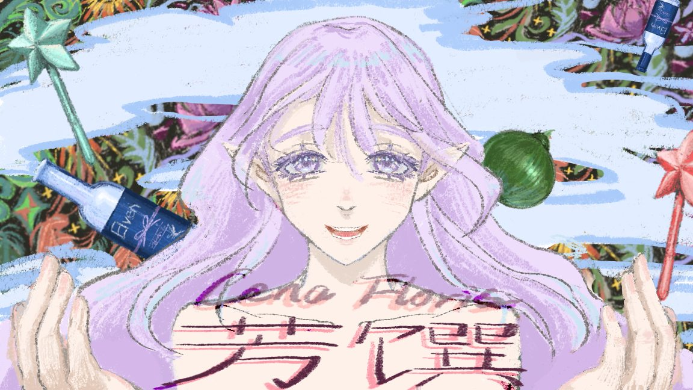
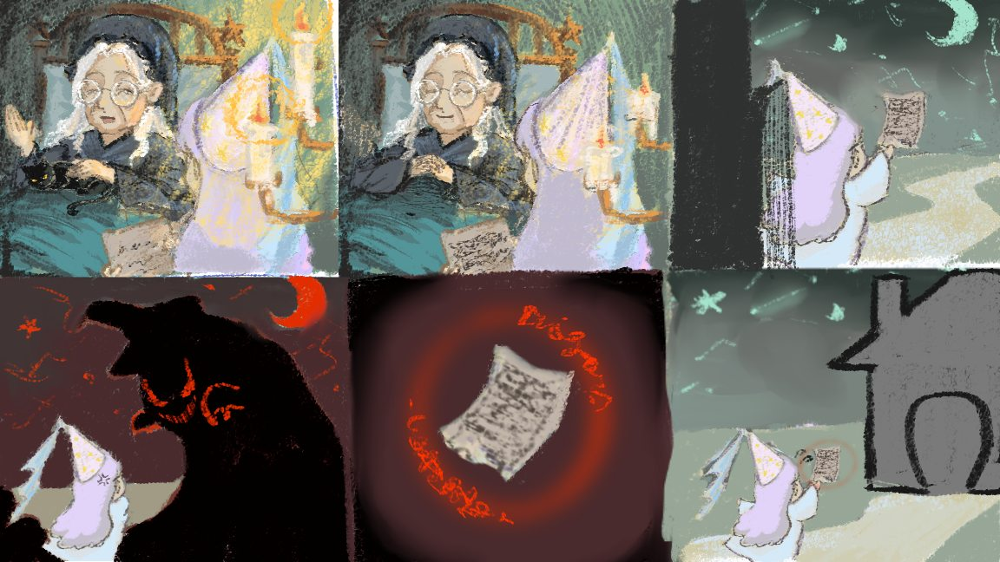
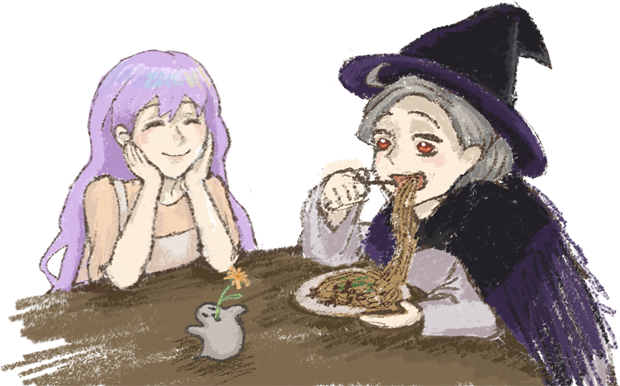
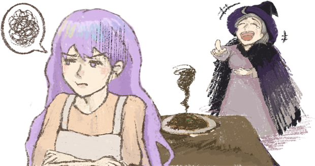
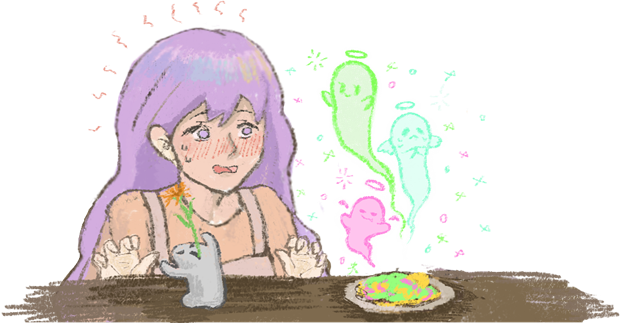
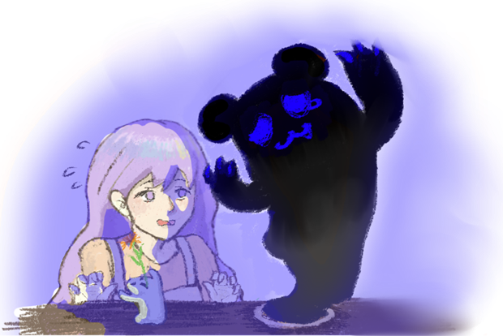

Selected Game
Cena Floris
A cooking-magic game where the recipe only becomes visible when you ask for it, and every second you look makes it burn away.

Overview
More certainty makes the next action easier, but it destroys part of what you may still need.
Cooking is a kind of magic, and only a few people can still do it. Most of the population lives on flowers. Some of them treat anyone who still eats food as an outsider.
A good meal in this world can do a great deal. It can even heal illness. The protagonist’s grandmother is one of the few who knows the cooking magic, but she is too ill to get out of bed, so the granddaughter takes the recipe and cooks in her place.
On the way back she runs into the people who despise eaters: a hostile witch, who curses the recipe.

The opening comic sets up the errand and the curse in six panels, so the burning recipe needs no explanation once play begins.
The core mechanic: information as a resource
Because the recipe is cursed, it is not simply readable. The player has to hold three random keyboard keys to reveal the hidden recipe, and while it is revealed the page burns away from the top down.
This is the design idea the whole game exists for. I wanted information itself to behave like a consumable resource rather than a free lookup. Reading is not a pause in the action; it is a spend. You can buy certainty about the next step, and the price is a permanent piece of the instructions you have not read yet.
It also puts the pressure in the right place emotionally. The player is not fighting the witch. They are rationing their own attention while something they need disappears.
Four endings
What the player manages to read, and what they therefore manage to cook, decides how the meal lands. The endings are framed as a single repeated composition. The same table, the same girl, and a different outcome sitting across from her, so the difference reads immediately as a consequence of the cooking rather than as a separate scene.




The four ending illustrations. They are transparent cut-outs, so each is presented on its own plate rather than cropped into a uniform rectangle.
Gameplay
Hosted on YouTube. Nothing loads from YouTube until you press play.